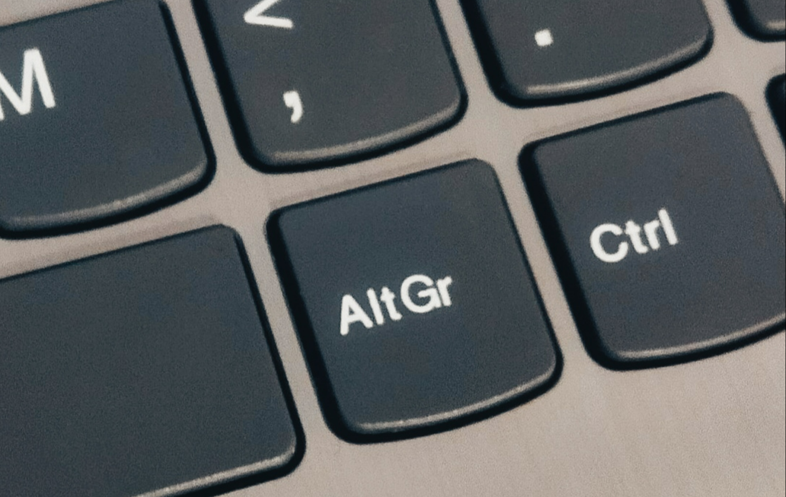
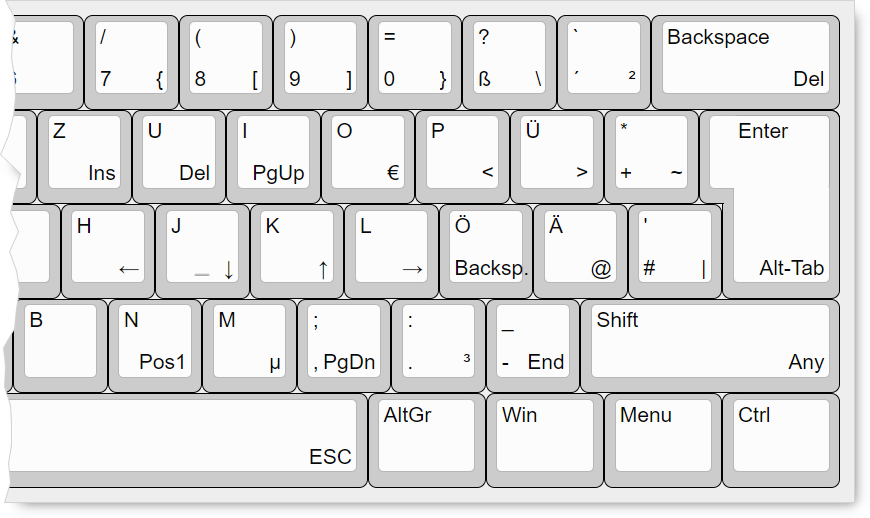
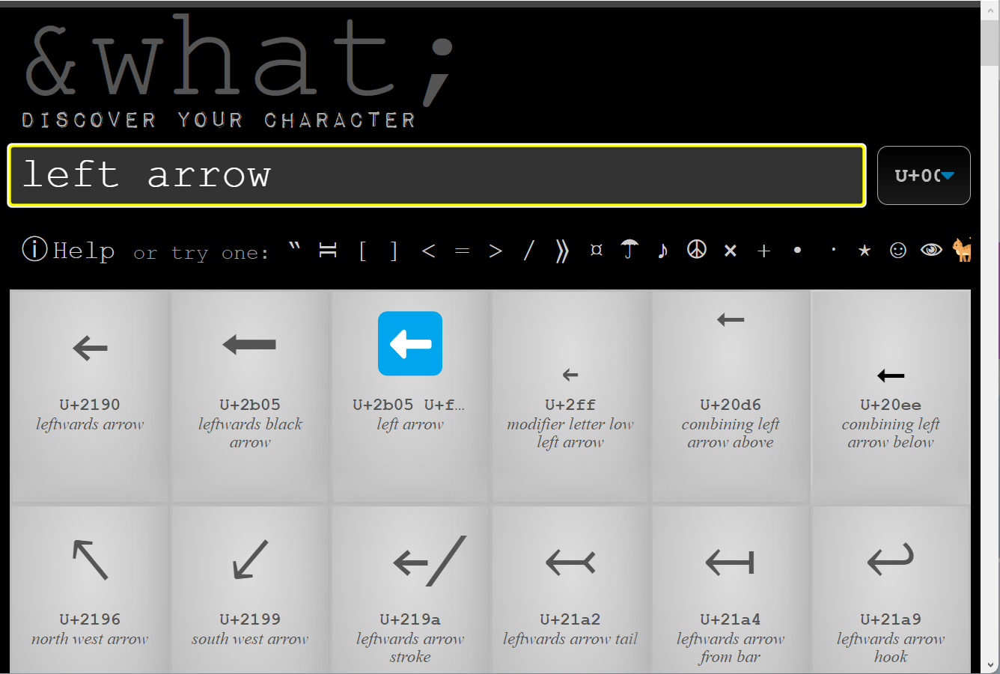
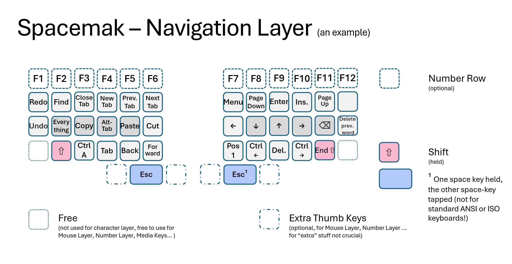

TL;DR
DeutschlandPlus ist ein kostenloses Add-on für die deutsche Tastaturbelegung, das schwer erreichbare Zeichen (Programmier-Zeichen [ ] { } \, @, €) und Navigation in die Grundreihe bringt – ohne die Standard-Belegung zu verändern.
Mit DeutschlandPlus tippst du:
- Entspannter: Hände bleiben in der Grundstellung
- Bequemer: Keine langen Griffe zum Navigationblock oder zur AltGr-Taste
- Navigation: Pfeiltasten, Pos1, Ende, Backspace, Delete direkt aus Grundstellung
- Sicherer: Weniger Fehler durch weniger Handbewegungen
- Kompatibel: Die deutsche Standard-Belegung bleibt erhalten
Für mich hat sich DeutschlandPlus seit 2007 bewährt. Ich habe es über 15 Jahre genutzt, bis ich ein eigenes Tastaturlayout für die Nutzung mit Englisch, Deutsch und Niederländisch entwickelt habe (siehe unten).
Download
Kostenloses AutoHotkey-Programm, sogar installationsfrei von USB-Stick nutzbar. Details weiter unten.
Das AltGr-Problem

Wer programmiert, Texte in LaTeX schreibt oder auch nur das @-Zeichen regelmäßig eingeben will, kennt das Problem: Im deutschen Tastaturlayout sind einige wichtige Zeichen wie zum Beispiel die eckigen Klammern [ ] nur über die AltGr-Taste erreichbar.
Das ist ein echtes Hindernis beim Blindschreiben, denn:
- AltGr sitzt schlecht: Mit der rechten Hand ist sie aus der Grundstellung kaum erreichbar. Zum Tippen von
\(Backslash) mit AltGr + der rechten Hand braucht es regelrechte Handverrenkungen. - Beide Hände nötig: Oft muss man mit der rechten Hand AltGr halten und mit der linken Hand eine Taste drücken – das ist unbequem und langsam.
- Die Konsequenz: Viele weichen aufs englische Tastaturlayout aus. Nachteil: Dann fehlen die Umlaute (ä, ö, ü) und man kann seinen Rechner schlecht mit anderen teilen.
DeutschlandPlus bietet eine elegante Lösung: Ein erweitertes deutsches Layout, das diese Probleme komplett behebt – ohne die Standard-Belegung zu verändern.
CapsLock als Modifier

DeutschlandPlus funktioniert nach einem einfachen Prinzip:
Die CapsLock-Taste wird zur zusätzlichen Modifier-Taste umfunktioniert. Damit lassen sich problematische Zeichen und Navigation bequem aus der Grundstellung erreichen.
| Was wird erreichbar? | Wie? |
|---|---|
Sonderzeichen [ ] { } \ @ € |
CapsLock + entsprechende Taste |
Pfeiltasten ← ↑ ↓ → |
CapsLock + h, k, j, l (wie Vim) |
| Navigation: Pos1, Ende, BildAuf/Ab, Entf | CapsLock + entsprechende Taste |
| Backspace (oft genutzt) | CapsLock + ö |
| ESC (für Vim-Nutzer) | CapsLock + Leertaste |
| Programm-Wechsel | CapsLock + Enter (= Alt-Tab) |
| Spezielle Zeichen & Symbole | Textkürzel (Hotstrings): z.B. => → ⇒ |
Merkhilfe für häufige Sonderzeichen auf der linken Hand:
@zusätzlich auf Ä-Taste (Merkhilfe: “ät”)€zusätzlich auf O-Taste (Merkhilfe: “O wie Münze”)
Wichtig: Am deutschen Tastaturlayout selbst ändert sich nichts. Du nutzt weiterhin Shift wie gewohnt. CapsLock sitzt links und ist mit dem kleinen Finger leicht zu halten – die Grundstellung bleibt unangetastet.
Anpassbarkeit: Wenn die vorgeschlagene Belegung der neuen Funktionen nicht gefällt, lässt sich das leicht an eigene Wünsche und Bedürfnisse anpassen.
Beim Blindschreiben (10-Finger Tastschreiben) gilt die Regel: Shift mit der anderen Hand als die Taste, die man drücken will.
Das gleiche Prinzip nutzt DeutschlandPlus mit CapsLock. Da CapsLock mit der linken Hand genutzt wird, kann man mit der rechten Hand bequem die meisten Sonderzeichen tippen. Die Hand bleibt in oder nah bei der Grundstellung. Für das Eurosymbol und den Klammeraffen gibt es aber auch eine Lösung.
Zusätzlicher Bonus: Die Navigation aus der Grundstellung spart den Griff zum Navigationblock (Pfeiltasten-Cluster) – oder sogar zur Maus. Das erspart viel Zeit im Alltag.
AltGr-Sonderzeichen Übersicht
- Eckige Klammern:
CapsLock + 8=[,CapsLock + 9=] - Geschweifte Klammern:
CapsLock + 7={,CapsLock + 0=} - Backslash:
CapsLock + -=\(statt AltGr +-) - Pipe:
CapsLock + <=|(auch auf ANSI/US-Tastaturen verfügbar) - Euro:
CapsLock + 5=€
Das funktioniert auch auf US-Tastaturen (ANSI, 104 Tasten), die die deutsche <>|-Taste gar nicht haben – praktisch für die Arbeit im Ausland oder mit ergonomischen Notebooks.
Textkürzel (Hotstrings)
Durch die begrenzte Zahl an Tasten lassen sich nicht alle Zeichen sinnvoll auf einer Tastatur unterbringen. Speziell Zeichen die man nur hin und wieder benötigt kann man daher statt dessen über Textkürzel realisieren. Die in AutoHotkey sogenannten Hotstrings, sind hier die passende Lösung.
Ein Beispiel:
- Tippe
=>→ wird automatisch zu⇒(Doppelpfeil) - Tippe
2-#→ wird zu–(typographischer Gedankenstrich, nicht-) - Tippe
alpha#→ wird zuα(griechischer Buchstabe)
Die Kürzel nutzen das #-Symbol als Stoppzeichen (kommt sowieso kaum am Ende von Wörtern vor). Eine vollständige Liste findest du in der DeutschlandPlus-Hilfe.
Wenn man ein Kürzel mal als Text selbst braucht: Einfach das Kürzel mit Leerzeichen trennen und dann Backspace drücken. Beispiel: = Leer > Backspace ergibt =>.
Auch die Textkürzel lassen sich leicht an eigene Wünsche anpassen oder erweitern.
Bonus: Schneller Zugriff auf alle Unicode-Zeichen

Mit CapsLock + rechte Shift öffnet sich im Browser die Seite https://www.amp-what.com. Dort kannst du nach jedem Zeichen suchen und es kopieren oder die HTML-/Unicode-Codes einsehen. Probiere mal als Suchbegriffe: paper, spanish, greek. Super praktisch für seltene Symbole -– das ist keine Lösung für Fließtexte, aber perfekt für gelegentliche Spezialfälle.
Navigation: Pfeiltasten ohne Griff zum Navigationblock
Die Pfeiltasten liegen auf H, J, K, L – wie auch in der Linuxwelt und im populären Texteditor Vim üblich, was Tastaturnavigation ohne Maus ermöglicht:
H (←) J (↓) K (↑) L (→)
Zusätzlich erreichbar:
- BildAuf/BildAb:
CapsLock + U/CapsLock + I - Pos1 / Ende:
CapsLock + Y/CapsLock + O - Einfügen (Ins):
CapsLock + P - Entfernen (Del):
CapsLock + Ü - Backspace:
CapsLock + Ö(weil Backspace sonst nur mit großer Streckung erreichbar ist)
Praktisches Beispiel: Text markieren ohne die Hand zu bewegen: Halte Shift, drücke CapsLock + K, K, K (drei Zeilen nach oben markieren) – alles aus der Grundstellung.
Lernkurve und Eingewöhnung
Erwarte nicht, dass alle Möglichkeiten sofort direkt “in den Fingern sitzen.” Wie jede neue Fertigkeit braucht auch dieses Layout etwas Übung.
In den ersten Tagen fühlt es sich wahrscheinlich noch etwas ungewohnt an, mit dem kleinen Finger die CapsLock-Taste als Layer-Taste zu nutzen. Das ist völlig normal. Aber nach einigen Wochen Nutzung wird man merken, dass die neuen Funktionen anfangen sich natürlich anzufühlen. Und schon bald will man nicht mehr darauf verzichten.
Empfohlene Lernreihenfolge:
- Starte mit den häufigen Sonderzeichen:
{ } [ ] \ € @ - Füge dann die Pfeiltasten hinzu
- Integriere schrittweise weitere Tasten (Navigation, Backspace)
- Optional: Textkürzel für deine Lieblingssymbole definieren
Tipp: Nutze die Hilfe. Diese ist mit CapsLock + F1 erreichbar.
Installation & Verwendung (Windows)
DeutschlandPlus ist als AutoHotkey-Skript umgesetzt. Es gibt zwei Optionen:
Option A: Ausführbare Datei (einfach)
- Download der
.exe-Datei - Starten – fertig. Keine Installation nötig.
- Läuft auch von USB-Stick ohne Admin-Rechte
- Programm mit Rechtsklick auf das Icon in der Taskleiste beenden/neu starten
Option B: Direktes Skript bearbeiten (für Fortgeschrittene)
- AutoHotkey installieren (kostenlos)
- Das
.ahk-Skript downloaden - Mit Rechtsklick → “Edit Script” bearbeiten
- Im Autostart-Ordner einen Link zum Skript erstellen
Anpassungen: Das Skript ist gut dokumentiert und lässt sich leicht erweitern. Du kannst eigene Hotstrings hinzufügen, neue Modifiers definieren oder Funktionen ändern. Die AutoHotkey-Community (Foren in Deutsch und Englisch) hilft gern weiter.
Voraussetzungen & Limitationen
Was du brauchst:
- Windows-System mit deutscher Tastaturbelegung aktiv
- AutoHotkey (nur für
.ahk-Skript-Variante) - 10-Finger-Blindschreiben/ Tastschreiben ist empfohlen, aber nicht Voraussetzung
Bekannte Limitationen:
- Loginbildschirm: DeutschlandPlus ist dort noch nicht aktiv
- Admin-Programme: Funktioniert nur, wenn auch DeutschlandPlus mit Admin-Rechten läuft
- Einzelne Programme: In wenigen speziellen Anwendungen wirkt die Tastenumsetzung nicht (sehr selten)
- Seltene Fehler: In seltenen Fällen “verschluckt sich” AutoHotkey. Dann einfach über das Taskleisten-Icon beenden und neustarten.
Der finale Weg zum Tastaturhimmel

DeutschlandPlus wurde entwickelt, um 100 % kompatibel mit einer Standardtastatur und der QWERTZ-Belegung zu bleiben. Für wen diese Kompatibilität nicht entscheidend ist, der findet in Spacemak und Anymak den vermutlich finalen Weg in den Tastaturhimmel :-)
Spacemak [1] kann man quasi als Nachfolger von DeutschlandPlus betrachten, da es die Kompatibilität mit dem Standardlayout auch so gut wie beibehält. Je nach deinen Wünschen oder Zielen ist das ggf. noch spannender als DeutschlandPlus, da es noch viel mehr Tasten für Shortcuts (copy, paste, Tab-Navigation) und noch mehr Zeichen nutzbar macht. Anymak packt dann letztlich obendrein noch eine eigene Tastaturbelegung obendrauf, so dass die Nachteile von QWERTY / QWERTZ umgangen werden.
[1] Abgebildet ist hier die Spacemak Navigations- und Kürzel-Ebene mit einer geteilten symmetrischen Tastatur (columnar split keyboard). Das zeigt etwas übersichtlicher welcher Finger welche Taste nutzt, aber funktioniert in exakt gleicher Weise auf einer Standardtastatur.